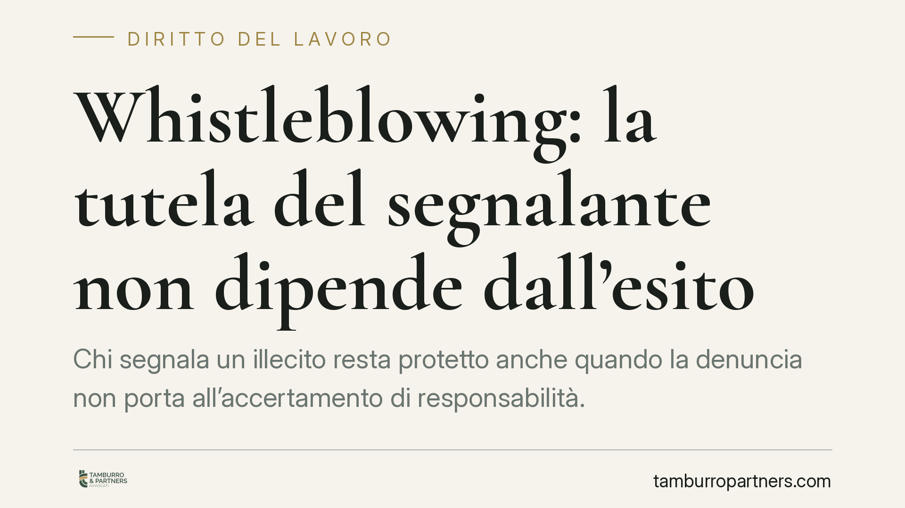

Whistleblowing: la tutela del segnalante non dipende dall'esito
Chi segnala un illecito resta protetto anche quando la denuncia non porta all'accertamento di responsabilità. A contare non è l'esito, ma la buona fede e la ragionevolezza della segnalazione al momento in cui viene effettuata. Un principio che sposta l'attenzione dal risultato alla serietà dell'allerta e che incide direttamente sulla gestione delle ritorsioni.

Il nodo: protezione legata all'esito o alla buona fede?
Una domanda ricorrente nelle controversie sul whistleblowing è se il segnalante perda la tutela quando la sua denuncia non conduce all'accertamento di alcun illecito. La risposta, coerente con l'impianto del D.lgs. 24/2023, è negativa: la protezione non è condizionata al successo della segnalazione.
Il ragionamento è lineare. Se la tutela scattasse solo a illecito confermato, nessun lavoratore in buona fede si esporrebbe: segnalare comporterebbe un rischio sproporzionato rispetto a un esito incerto. La finalità della normativa — far emergere condotte illecite — verrebbe frustrata in partenza.
Inquadramento normativo
Il D.lgs. 24/2023, che ha recepito la direttiva UE 2019/1937, disciplina la protezione delle persone che segnalano violazioni di disposizioni normative lesive dell'interesse pubblico o dell'integrità dell'ente.
L'art. 16, comma 1, fissa la condizione soggettiva della tutela: il segnalante è protetto quando, al momento della segnalazione, aveva fondato motivo di ritenere che le informazioni fossero vere e rientranti nell'ambito oggettivo della normativa. Il metro di valutazione è quindi riferito al tempo della segnalazione, non all'accertamento successivo. Restano esclusi dalla tutela, ai sensi dell'art. 16, comma 3, soltanto i casi di dolo o colpa grave, cioè le segnalazioni infondate presentate con malafede.
Il secondo pilastro è l'art. 17, che individua le condotte ritorsive vietate e, al comma 2, introduce l'inversione dell'onere della prova: dimostrata l'adozione di una misura sfavorevole (licenziamento, demansionamento, trasferimento, mancata promozione) in presenza di una segnalazione, spetta a chi l'ha adottata provare che la misura è fondata su ragioni estranee alla segnalazione stessa.
Il profilo probatorio
Qui si concentra la parte più delicata del contenzioso. Il segnalante raramente dispone di prove dirette dell'intento ritorsivo. Per questo il quadro normativo valorizza elementi indiziari: la vicinanza temporale tra segnalazione e provvedimento sfavorevole, il mutamento repentino di valutazioni prima positive, l'assenza di una motivazione oggettiva coerente.
Una volta che il segnalante allega questi indizi, la buona fede iniziale non va più dimostrata nel merito dell'illecito: il baricentro si sposta sul datore di lavoro, che deve giustificare la propria scelta con ragioni documentabili e indipendenti dalla segnalazione. È un meccanismo di riequilibrio, non di automatica condanna.
Il ruolo dell'ANAC
Accanto ai canali interni, il D.lgs. 24/2023 prevede la segnalazione esterna all'Autorità Nazionale Anticorruzione (ANAC), attivabile quando il canale interno manca, non è conforme, non ha dato riscontro o quando sussiste il rischio di ritorsione. L'ANAC gestisce le segnalazioni esterne e vigila sull'effettività delle procedure, anche con potere sanzionatorio verso gli enti inadempienti.
Implicazioni pratiche
Per il lavoratore il messaggio è chiaro: la protezione non premia l'esito, ma la serietà dell'allerta. Una segnalazione circostanziata e in buona fede resta coperta anche se le verifiche non confermano l'illecito.
Per il datore di lavoro e per l'ente l'effetto è altrettanto netto. Qualsiasi provvedimento sfavorevole adottato nei confronti di un segnalante in un arco temporale ravvicinato è potenzialmente scrutinabile come ritorsione, con onere della prova a proprio carico. La tracciabilità delle decisioni organizzative diventa quindi decisiva.
Cosa fare in concreto
Se sei un potenziale segnalante:
- Raccogli e conserva la documentazione a supporto prima di segnalare: la buona fede si valuta sulle informazioni disponibili al momento.
- Utilizza il canale interno previsto dall'ente; attiva il canale esterno ANAC solo nei casi consentiti dall'art. 6 del D.lgs. 24/2023.
- Annota date e passaggi: la cronologia è un elemento probatorio centrale in caso di ritorsione.
Se gestisci un'organizzazione:
- Verifica che i canali di segnalazione siano conformi al D.lgs. 24/2023 e garantiscano la riservatezza del segnalante.
- Motiva per iscritto ogni provvedimento che incida su un lavoratore che abbia segnalato, documentando ragioni oggettive e preesistenti.
- Forma il personale che tratta le segnalazioni, così da ridurre il rischio di condotte qualificabili come ritorsive.
Disclaimer
Contributo informativo a cura di Tamburro & Partners - Avv. Giuseppe Tamburro. Non costituisce parere legale.
Ogni storia di lavoro ha i suoi tempi.
Se gestisci HR e vuoi un confronto su contenzioso, ispezioni o licenziamenti, scrivi allo studio. Ti rispondiamo entro un giorno lavorativo.